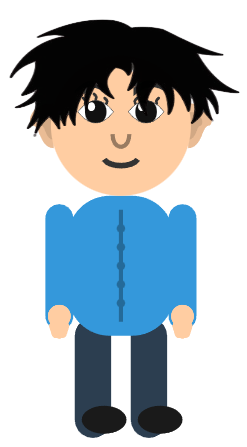
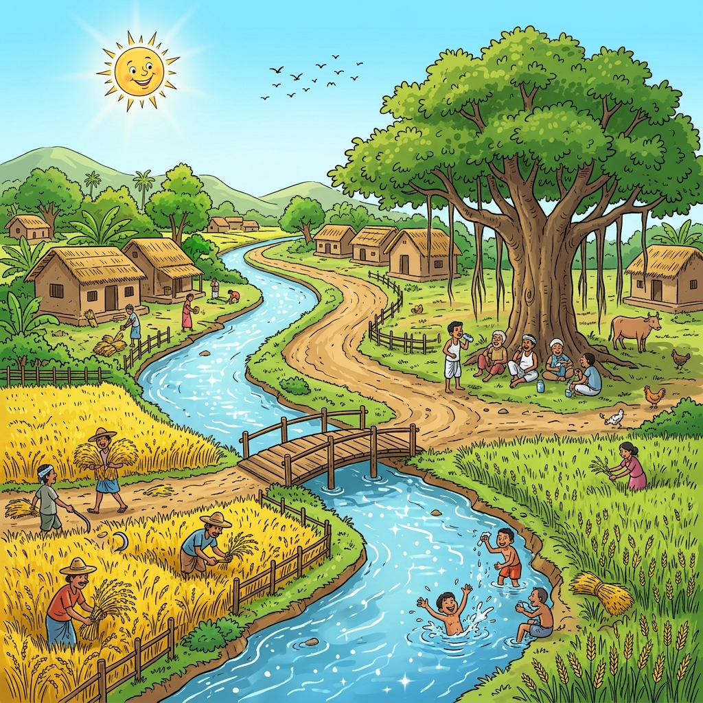
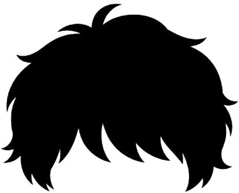

Personal Project - Browser Animation Studio
Animator Pro
A browser-based cartoon animation studio for YouTube videos, kids learning content, storytelling, talking characters, animated news scenes, nursery rhymes, and interactive scene production.

A complete in-browser animation workspace.
Animator Pro removes the gap between an idea and an animated video. A creator can build a scene, control a character, add a voice, automate paths, apply weather, compose panels, and record the result without opening a traditional animation package.
What I built
Animator Pro combines HTML, CSS, JavaScript, Canvas rendering, DOM overlays, Web Audio, Speech Synthesis, MediaRecorder capture, JSON serialization, and model-viewer support for GLB content inside panels. The product is designed as a creator-friendly visual control surface with enough depth for advanced scene control.
It is useful for kids ABC videos, number and color lessons, nursery rhyme animations, talking animal stories, animated news presenter scenes, vertical shorts, game-like learning clips, and fast social content production.
Who it is for
YouTube creators producing kids cartoon videos and educational series.
Educators making ABC, number, color, shape, rhyme, and classroom content.
Social creators producing Shorts, Reels, TikTok clips, and animated story posts.
Small teams creating explainers or animated news scenes without heavy software.
Cartoon storytellers building characters, paths, props, and reusable scenes.
Developers exploring browser-based creative tooling and visual automation.


From character to finished video.
The main workflow is built around direct manipulation, visual controls, automation steps, and browser recording.
Add entities
Spawn characters, animals, aliens, props, vehicles, roads, houses, classroom objects, or scene assets.
Customize look
Change colors, face, body, clothing, hair, accessories, scale, speed, and walk style.
Design scene
Use background images, gradients, day/night theme, weather, panels, GLB content, and drawing tools.
Add performance
Apply emotion, speech, recorded audio, text-to-speech, mouth animation, actions, poses, and paths.
Automate
Build sequences with walk, view, emotion, action, and talk steps, then inspect them in a timeline.
Layer media
Add playlists, sound effects, balloons, panel movements, color adjustments, and mini-game scenes.
Record output
Use aspect guides and browser capture to record landscape, vertical, square, or tutorial videos.
The tool surface covers animation, audio, panels, games, and export.
The project is intentionally broad: it gives non-technical creators visual controls while keeping reusable data structures underneath.
Character Creator
Preset characters, canvas rigging, face/body controls, clothing, hair, accessories, and custom images.
Entity Library
Animals, aliens, objects, vehicles, roads, classroom props, and story elements for fast scene building.
Emotion & Talk
Speech bubbles, emotion presets, recorded voice, text-to-speech, lip sync behavior, pitch, rate, EQ, and voice configs.
Automation
Walk, view, emotion, action, and talk steps with sound effects, loops, scaling, and timeline inspection.
Scene Builder
Solid colors, gradients, uploaded backgrounds, pan/zoom, moving background sequences, panels, and object positioning.
Weather & Theme
Day/night mode, sky theme, stars, planets, rain, thunderstorm, fog, cold breeze, snow, heavy rain, and tornado effects.
Panel Editor
Movable panels with images, HTML, GLB models, canvas drawing, opacity, borders, shadows, paths, sway, shake, and JSON export.
Drawing Tools
Pencil, pen, shapes, line, eraser, bucket fill, roads, gradients, edit/deform mode, undo/redo, and clear tools.
Audio Playlist
Multi-file uploads, drag reorder, enable/disable, loop, seek, volume, playback rate, pitch, and modulation controls.
Recorder
Guides for 16:9, 9:16, 1:1, 4:5, 4:3, 3:2, and 21:9 with editable capture frame and cursor option.
Toys & Balloons
Balloon overlays with repeat launch, shapes, text labels, opacity, size ranges, images, and direction controls.
Mini-Games
Runner, falling obstacle, snake, and Temple Run 3D modes for game-like educational clips.
Color Adjustment
Stage, panels, and characters can use brightness, contrast, saturation, exposure, HSL, RGB, color wheels, LUTs, and presets.
Export & Import
Character JSON, automation JSON, panel JSON, and full site state export/import for reusable scene production.
Content Formats
Designed for YouTube landscape, Shorts/Reels vertical, square posts, animated lessons, and tutorial capture.
Browser APIs
Canvas, DOM layers, Web Audio, Speech Synthesis, MediaRecorder, display capture, and model-viewer integration.
A large visual control surface for creators.
The interface is organized as focused controllers so users can compose a scene, tune a character, animate behavior, and record output from one workspace.
Top controls, recorder, and timeline
- Utility controls include sidebar collapse, global play/pause, percentage ruler, full site export/import, and recorder drawer access.
- The recorder drawer supports 16:9, 9:16, 1:1, 4:5, 4:3, 3:2, and 21:9 guides, drag/resize editing, cursor capture, start, pause, and stop.
- The animation timeline modal shows current time, a grid, refresh/close controls, and play/pause/stop behavior for enabled timelines.
Characters, entities, and layer management
- Spawn Character adds one of 40 presets including male, female, children, elderly, worker, engineer, coder, office, superhero, villain, doctor, police, chef, teacher, robot, zombie, baby/toddler, reporter, and news anchor styles.
- Add Entities includes animals such as cow, hen, tiger, lion, elephant, rabbit, dog, horse, giraffe, monkey, cat, snake, crocodile, fish, shark, whale, and more.
- The entity library also includes aliens, classroom objects, toys, houses, buses, trucks, bikes, cycles, ricksha, dirt roads, highways, and city streets.
- Active Scene Entities provides a layer list with active/control state, visibility, name display, drag mode, and resize transforms.
Appearance, face, clothing, body, and accessories
- Modifiers export/import character JSON and control skin, hair, shirt, pants, shoes, name, speech bubble, scale, speed, walk type, hair type, and custom face upload.
- Custom Face Advanced toggles individual parts such as eyes, mouth, hair, beard, ears, nose, head, neck, body, hands, legs, shirt, and pant with outline, 3D, and glow effects.
- Clothing controls include sleeve and pant dimensions, shirt styles, pockets, collars, stripes, buttons, wrinkles, dresses, traditional outfits, shoes, and body proportions.
- Face, eyes, mouth, nose, hair, ear, mustache, beard, and circle controls tune position, scale, curves, colors, lashes, pupils, lips, teeth, tongue, and custom shape dots.
- Body rotation and limb tools tune body angle, torso, arms, hands, legs, curves, start/end points, mirroring, and single-limb control.
- Custom body and object attachment supports uploaded body images, attached image or HTML objects, placement, and bounce while moving.
Emotion, voice, path movement, actions, and automation
- Emotion controls include idle, smile, joy, laugh, love, sad, crying, angry, fear, surprise, thinking, confused, nervous, embarrassed, sleepy, and other expressions.
- Talk tools support text, uploaded audio, recorded audio, preview/split/update/add, text-to-speech voice presets, pitch, rate, EQ, volume, saved configs, per-character voices, bubbles, head tilt, mouth animation, text sync, and recorded voice effects.
- View Direction supports auto, front, back, left, and right views.
- Path and Movement includes path mode, clear path, speed, show path, auto wrinkles, multi-path looping, jump start, path lists, distance offset, and auto depth scaling.
- Actions and poses include teaching, guns with recoil, waving, hands up, smoking, dance, microphone, sitting, laying, and fine controls for hands, aim, bullets, puffs, body motion, and dance speed.
- Automation Sequence exports/imports JSON and runs walk, view, emotion, action, and talk steps with target picking, sound effects, coordinates, speed multipliers, scaling, loop sequence, loop jump, timeline view, play all, pause, stop, and clear.
Backgrounds, theme, panels, drawing, and color adjustment
- Background controls support solid color, radial and linear gradients, custom CSS gradients, multiple images, size modes, zoom, scale, pan, moving background sequences, wait steps, reorder/edit, and stage object pan behavior.
- Theme and Scene Control supports sky theme, sun/moon visibility, day/night toggle, stars, planets, cloud wisps, shooting stars, rain, thunderstorm, fog, cold breeze, snow, heavy rain, and tornado overlays.
- Panel Controls add movable layers with titles, image uploads, GLB uploads, HTML content, fit modes, headers, borders, shadows, transparent backgrounds, drawing canvases, auto-rotation, movement paths, look-at behavior, sway, shake, and JSON import/export.
- Drawing tools include move all, pencil, pen, circle, triangle, square, line, eraser, bucket fill, road, free road, fill colors, gradients, stroke settings, edit mode, deform mode, undo, redo, and clear.
- Color Adjustment applies to stage, panels, and/or characters with brightness, contrast, saturation, exposure, highlights, shadows, temperature, tint, sharpness, HSL, luma ranges, RGB channels, color wheels, LUT upload, and filter presets.
Audio controller, toy controller, games, and reusable exports
- Audio Controller uploads multiple files, drag-reorders playlists, enables/disables tracks, deletes tracks, loops, seeks, controls volume, changes rate and pitch, and supports modulation.
- Toy Controller launches balloons once or on repeat with count, interval, direction, opacity, size, shape, text labels, and uploaded images.
- Games include runner, falling obstacles, snake, and Temple Run 3D with score, auto modes, custom characters/obstacles/foods, text overlays, speed, zoom, and direction controls.
- Export/import paths include character JSON, automation sequence JSON, panel JSON, and full site state JSON containing characters, entities, backgrounds, panels, color adjustment, and audio playlists.
Vanilla web technologies powering a creative workspace.
The project demonstrates browser APIs, real-time rendering, visual editors, reusable JSON state, and modular JavaScript architecture.
Architecture summary
- Canvas renders rigged cartoon characters and scene entities.
- DOM overlays handle panels that can contain images, HTML, drawings, and GLB models.
- Automation steps are stored as JSON and run as per-character queues.
- Web Audio and Speech Synthesis power voice, pitch, rate, EQ, and lip sync behavior.
- MediaRecorder and display/canvas capture support browser-based video recording.
- Serializers save and restore characters, panels, automation, audio, and full scenes.
Important source files
- index.html: main interface and sidebar controls.
- script.js: character engine, stage loop, automation, talk/TTS, movement.
- entities.js: animals, aliens, objects, vehicles, and props.
- panel_control.js: external panel editor, drawing, movement, effects.
- panel_color_adjustment.js: stage, panel, and character color grading.
- audio_playlist_engine.js: playlist playback engine.
- audio_playlist_controller.js: playlist UI, pitch, rate, and modulation.
- toy_controller.js: balloon overlay tool.
- game_controller.js: runner, falling obstacle, and snake controllers.
- temple_run_game.js: Temple Run 3D game mode.
- theme_engine.js: day/night, sky, weather, and atmosphere.
- stage_recorder.js: recorder drawer, aspect guides, and capture workflow.
Designed around real creator workflows.
Animator Pro is practical for fast educational and social animation production.
Kids ABC Cartoon
Add a child character, letter panels, colorful backgrounds, TTS narration, happy emotions, walk/talk automation, and balloons.
Nursery Rhyme
Load a scene background, add animals, play music from the audio playlist, loop character paths, and record a 16:9 video.
Talking Animal Story
Add an animal, speech bubble, recorded voice, weather effect, panel captions, and reusable story scenes.
Animated News Scene
Use a news anchor preset, lower-third panel, moving background, sound effects, TTS voice, and graphic panels.
YouTube Short
Switch to the 9:16 guide, compose vertically, add speech and motion, then record for Shorts, Reels, or TikTok.
Game Learning Clip
Use runner, falling obstacle, snake, or Temple Run mode with custom text and images for letters, words, or math answers.
Built for rapid YouTube and educational content production.
The project favors visual controls, reusable state, and practical output formats.
Where the project can grow next.
The foundation supports richer production workflows, reusable templates, and AI-assisted creation.
- Template library for common YouTube, classroom, nursery rhyme, news, and social formats.
- More premade character packs, entity packs, backgrounds, and style presets.
- Timeline keyframe editor improvements for more precise motion control.
- Cloud project saving for multi-device scene editing and series production.
- One-click video rendering/export workflow after browser recording.
- AI-assisted scene generation from story prompts, educational scripts, and video outlines.
Animator Pro turns a browser into a lightweight cartoon production studio.
It gives creators a fast way to build, animate, narrate, reuse, and record cartoon content for YouTube and beyond, while demonstrating a deep browser engineering skill set.